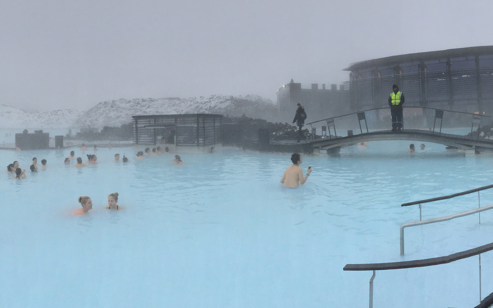

冰岛议会
冰岛的阿尔庭建立于930年，是世界上最早的议会。现在它有63名成员，由全国人口每四年选举一次。国家元首是总统，任期四年。政府首脑是总理，由总统任命，与他的内阁一起履行政府的行政职责。

冰岛神瀑
冰岛不仅是第四纪冰帽的中心，而且高原上仍有现代冰川分布，主要是盾形的冰帽冰川，也有少量的冰斗冰川，面积占全岛的11.5％。主要有瓦特纳冰原，朗格冰原，霍夫斯冰原及米达冰川，其中瓦特纳冰原面积达8450平方千米，厚度在几百米到2千米之间，是除南极和格陵兰之外世界最大的冰川。

雷克雅未克
雷克雅未克位于法赫萨湾南部，是斯堪地那维亚北欧岛国冰岛的首都，亦是冰岛最大的城市。雷克雅未克地理上非常接近北极圈，其纬度64°08'N，是全世界最北的首都。
议会旧址国家公园
议会旧址国家公园（Thingvellir），位于冰岛西南部，首都东部50千米处，公元930年冰岛早期移民在此处举行第一次全国“人民代表大会”，成立了世界上最早的由民主方式选举出来的议会和第一部冰岛宪法。这儿风景优美，以欧亚和美洲两大板块的断裂谷地和纯净幽深的议会湖而著名世界。此公园也是世界文化和自然遗产风景胜地。